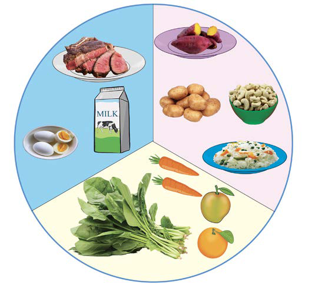

Adolescents
During adolescence, the body grows fast and goes through changes. Adolescents need a diet rich in body-building, protective and energy-giving foods. At this age, they are involved in many activities like sports, farming and studying for long hours. Because of this, their diet should include plenty of energy-giving foods to provide enough energy for these activities. Refer to Figure 7.
Figure 7: Balanced diet for an adolescent

Elderly
The elderly need foods rich in vitamins to protect them from illnesses. Their immune system gets weaker with age. They should also eat foods rich in minerals to keep bones and muscles strong. A small amount of energy-giving foods is needed to support light activities. This helps them avoid gaining too much weight. Body-building foods are also important to replace old or damaged cells. Figure 8 shows a balanced diet for elderly.